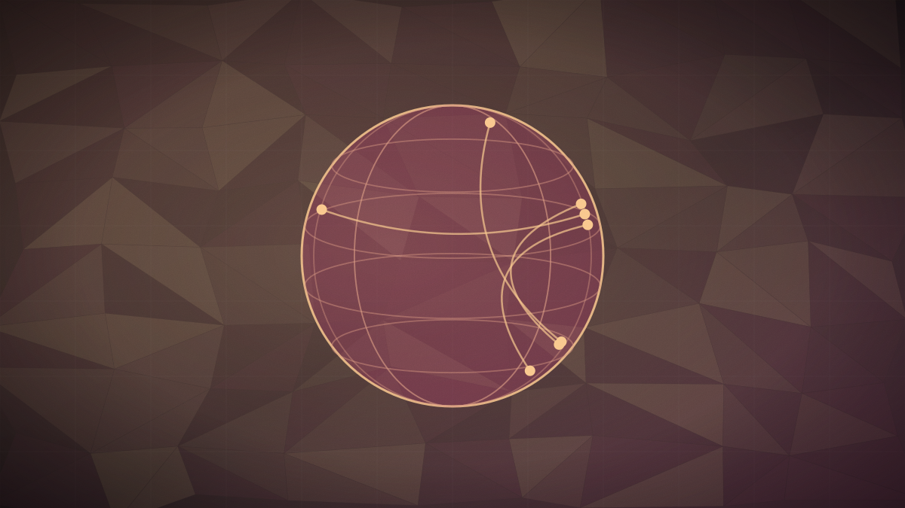

Infostealer malware hijacks Claude session cookies, exposing corporate data connectors
The campaign replayed Windows and macOS browser cookies to bypass multi-factor authentication, accessing corporate Google Workspace integrations that remain active after Claude logouts.

Original cover art, generated for this story. THE VISSION does not republish third-party press imagery.
- Anthropic notified users that infostealer malware campaigns have hijacked active Claude session cookies to bypass login guards, VentureBeat reported on September 2.
- The breach primarily affected card-billed, self-serve accounts that bypass corporate identity providers, exposing chat histories, project files, and Google Workspace integrations.
- Security telemetry shows that up to 61% of enterprise conversations on Claude run through personal browser identities, leaving session cookies highly vulnerable to malware.
Anthropic has begun notifying customers that cybercriminals are replaying stolen browser session cookies to hijack paid Claude accounts, bypassing multi-factor authentication (MFA) and single sign-on (SSO) login protections, VentureBeat reported on September 2. The campaign utilized common infostealer malware families — including Vidar, LummaC2, and RedLine on Windows, and Atomic Stealer on macOS — to harvest active session data from users' machines.
The compromised sessions primarily affected self-serve, card-billed accounts, including personal Pro subscriptions and team seats. These accounts often operate outside the governance of corporate IT identity providers. The exposure risk is severe: once inside an active Claude session, attackers can access chat histories, uploaded proprietary files, and active data connectors. Furthermore, while signing out of Claude invalidates the stolen session cookie, security researchers warn that the sign-out does not revoke underlying OAuth permissions granted to Claude, potentially leaving connected Google Workspace or Microsoft OneDrive accounts exposed.
The campaign highlights a massive security gap in enterprise AI adoption. Security telemetry from LayerX and Akamai indicates that 61% of corporate conversations on Claude (and 47% of all enterprise AI conversations) are conducted through personal browser identities rather than enterprise consoles. To address this, security vendors are rushing out new standards; Okta launched Agent SSO in late August to govern AI agents as first-class identities, and Google Chrome has introduced Device Bound Session Credentials to bind session cookies to a device's hardware TPM, though adoption remains low.
The shift from credential theft to session hijacking represents a critical vulnerability for corporate AI deployments. When employees use personal logins for work tasks, they bypass enterprise identity controls and expose connected corporate drives to infostealers. The persistent nature of OAuth connections means a single compromised browser cookie on an employee's personal laptop can grant hackers a long-term, unrevokable bridge directly into corporate Google Workspace or Microsoft cloud accounts, making agent identity management the most critical front in enterprise cybersecurity.